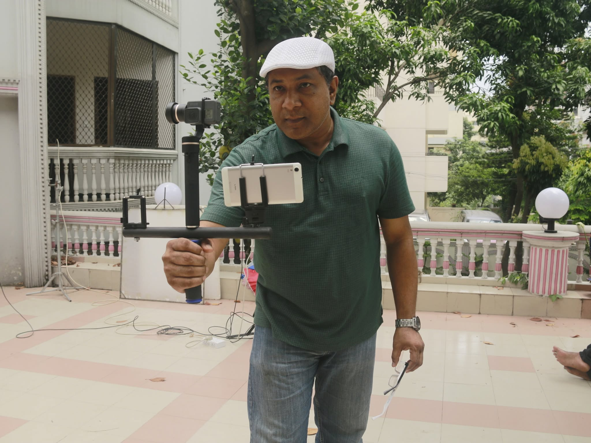

Director · Producer · Writer · Cinematographer · Author · Teacher · Content Creator
With over 20 years in the film industry, he has dedicated much of his career to mentoring the next generation of filmmakers as a university lecturer and guest examiner.
Bangladesh Cinema and Television Institute
Stamford University Bangladesh
University of Dhaka, Dept. of Film Studies
North South University, Dept. of Film and Television
